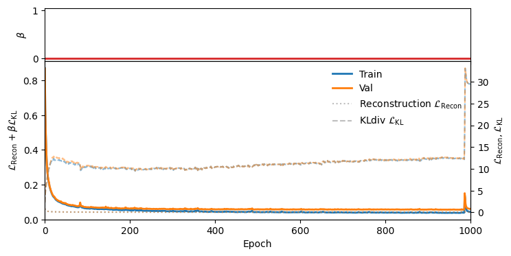
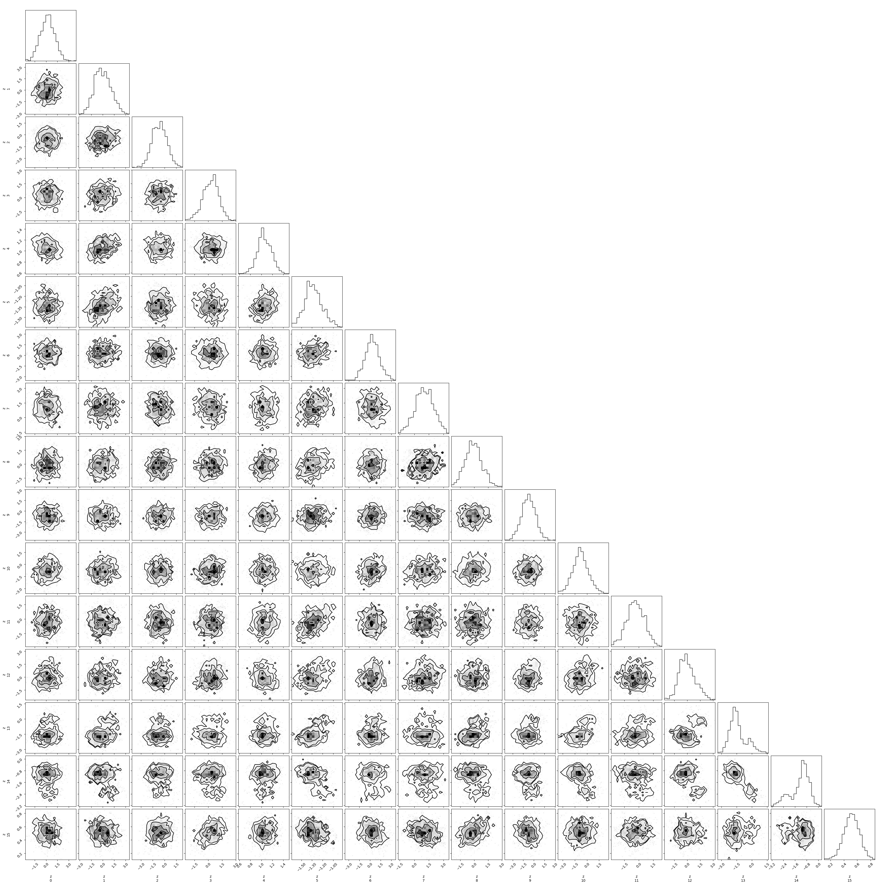

Example#
Train VAE#
%load_ext autoreload
%autoreload 2
! pip install starccato_jax starccato_sampler -q
import starccato_jax
import starccato_sampler
print(f"starccato_jax version: {starccato_jax.__version__}")
print(f"starccato_sampler version: {starccato_sampler.__version__}")
from starccato_jax.data import load_training_data
import matplotlib.pyplot as plt
import os
HERE = os.getcwd()
model_savedir = f"{HERE}/model_out"
os.makedirs(model_savedir, exist_ok=True)
train_data, val_data = load_training_data()
plt.figure(figsize=(3, 2.5))
for i in range(100):
plt.plot(train_data[i], color="k", lw=0.3, alpha=0.2)
plt.savefig(f"{model_savedir}/training_data.png")

from starccato_jax import Config, StarccatoVAE
RETRAIN = False
if RETRAIN:
config = Config(latent_dim=16, epochs=300, cyclical_annealing_cycles=0)
starccato_vae = StarccatoVAE.train(
model_dir=model_savedir,
config=config,
plot_every=50,
print_every=50,
)
else:
starccato_vae = StarccatoVAE()
Loss |
 |
Reconstructions |
|

import jax
n = len(val_data)
zs = jax.random.normal(jax.random.PRNGKey(0), (n, starccato_vae.latent_dim))
generated_signal = starccato_vae.generate(z=zs)
for i in range(n):
kwgs = dict(lw=0.1, alpha=0.1)
plt.plot(generated_signal[i], color="tab:orange", **kwgs)
plt.plot(val_data[i], color="k", **kwgs)
fig, ax = plt.subplots()
starccato_vae.plot(ax, n=100, ci=0.95)
starccato_vae.plot(ax, n=100, ci=0.5)
MCMC on one validation dataset#
from starccato_sampler.sampler import sample
mcmc_out = sample(
train_data[54], model_savedir, rng_int=0, outdir=f"{HERE}/out_mcmc"
)
import arviz as az
inf_data = az.from_numpyro(mcmc_out)
az.summary(inf_data, var_names=["z"])
Trace |
|
Corner |
 |
CI |
|